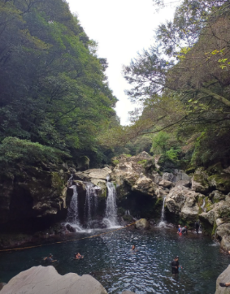
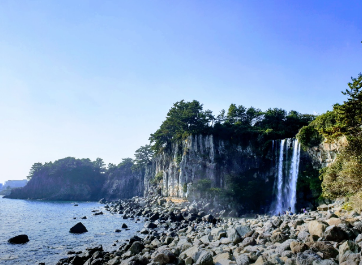
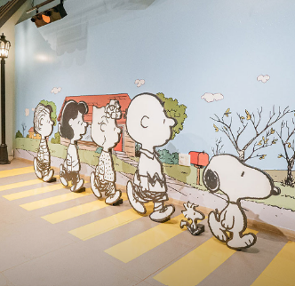
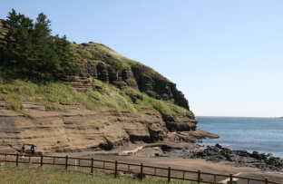
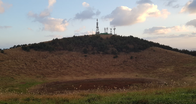
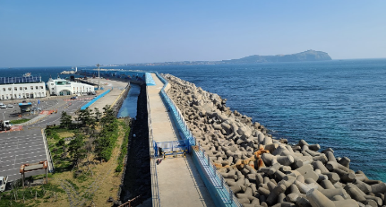
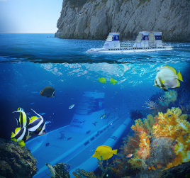

아쿠아플라넷 제주
전화번호 : 1833-7001
주소 : 제주 서귀포시 성산읍 섭지코지로 95 아쿠아플라넷 제주
이용시간 : 매일 09:30 ~ 19:00 (매표 마감 18:00)
바로가기




바로가기
스누피가든
전화번호 : 064-903-1111
주소 : 제주 제주시 구좌읍 금백조로 930
이용시간 : 하절기(4 ~ 9월) : 09:00 ~ 19:00
동절기(10 ~ 3월) :
09:00 ~ 18:00
바로가기






산방산 탄산온천
전화번호 : 064-792-8300
주소 : 제주 서귀포시 안덕면 사계북로41번길 192
이용시간 : 실내온천 : 06:00 ~ 23:00
찜질방 : 06:00 ~
22:00
야외노천탕 : 10:00 ~ 22:00
바로가기
